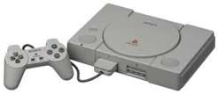
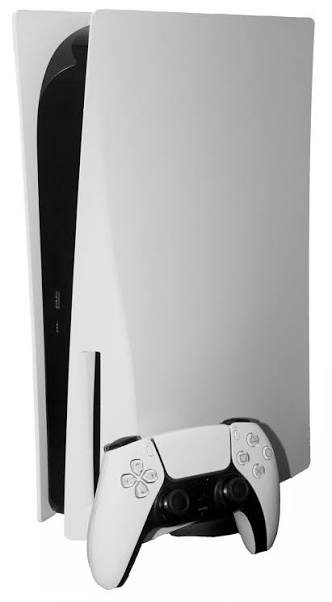

01

1994
PlayStation
Konsol pertama Sony yang mengubah dunia gaming dengan media CD.
LOADING THE LEGACY
THE HISTORY OF GAMING
Menjelajahi perjalanan PlayStation dari generasi pertama hingga PlayStation 5.
CONSOLE GENERATIONS

Konsol pertama Sony yang mengubah dunia gaming dengan media CD.
Salah satu konsol paling populer sepanjang sejarah video game.
Membawa Blu-ray, HD gaming dan PlayStation Network.
Generasi yang membawa gaming ke era sosial dan digital.

Generasi terbaru dengan SSD ultra cepat, ray tracing dan DualSense.
FROM 1994 TO NOW
Sony memasuki industri konsol dengan PlayStation generasi pertama.
PS2 memperluas popularitas gaming dengan library game yang sangat besar.
Era Blu-ray dan online gaming PlayStation.
Fokus pada gaming, sharing dan pengalaman digital.
SSD cepat dan DualSense menghadirkan pengalaman gaming generasi baru.
FROM THE BEGINNING
Perjalanan PlayStation dimulai ketika konsol pertama diluncurkan di Jepang pada 3 Desember 1994. Konsol ini kemudian hadir di Amerika Utara pada 9 September 1995 dan Eropa pada 29 September 1995.
PlayStation membawa pendekatan baru ke dunia game rumahan dengan penggunaan CD-ROM dan kemampuan rendering 3D. Teknologi tersebut membantu menghadirkan dunia game yang lebih kompleks dibanding banyak pengalaman 2D sebelumnya.
Dari sinilah lahir berbagai seri yang kemudian menjadi bagian penting dari sejarah PlayStation, seperti Crash Bandicoot, Resident Evil, Final Fantasy VII, Gran Turismo dan Tekken.
Generasi pertama memperkenalkan PlayStation kepada dunia dan menjadi salah satu konsol penting dalam perkembangan game 3D.
PS2 melanjutkan kesuksesan generasi pertama dengan dukungan DVD dan library game yang sangat luas.
PS3 membawa Blu-ray, layanan online dan hardware yang lebih kuat untuk pengalaman gaming HD.
PS4 membawa PlayStation ke era yang semakin terhubung dengan fitur sharing, streaming dan game digital.
PS5 memperkenalkan SSD berkecepatan tinggi, ray tracing dan controller DualSense dengan haptic feedback serta adaptive triggers.
PLAYSTATION HISTORY
Dari era CD hingga SSD ultra cepat, PlayStation terus berkembang mengikuti perubahan teknologi dan budaya gaming.
Description